Les cartes de l'Oracle de Gé
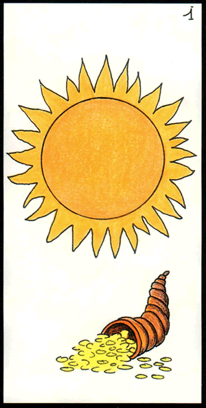
1 Le Soleil
Réussite, chaleur et bonheur, les mauvaises ondes sont écartées et font place à de bonnes vibrations. Les ennuis sont écartés pour vous permettre de finaliser vos projets. Cette carte divinatoire de l'oracle de gé fixe la saison de l'été ou un période de trois mois.
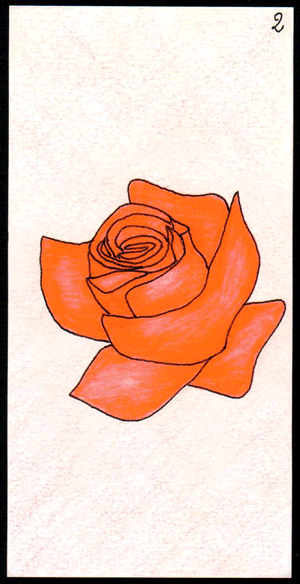
2 La Rose
Amour fort et déclaration sentimentale sont à prévoir, l'amour va frapper à votre porte. Des cadeaux arriveront de manière inopinées. Symbolise aussi la beauté physique, le plaisir du regard et l'envie de plaire. Si vous êtes en couple vous allez vivre une vrai passion.
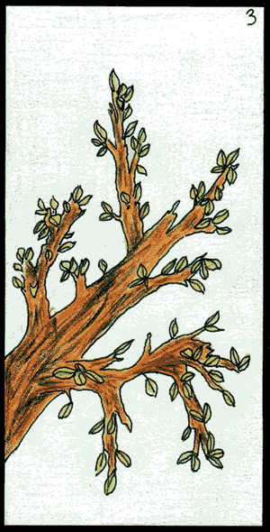
3 Le Printemps
Carte de temps et de saison de l'oracle de gé, du renouveau est à prévoir, de nouveaux projets et de nouvelles rencontres. Les changements seront les bienvenues dans votre routine du quotidien. Votre vie sentimentale et financières s'amélioreront dans cette pèriode. Cette carte indique le printemps et une période égale à trois mois.
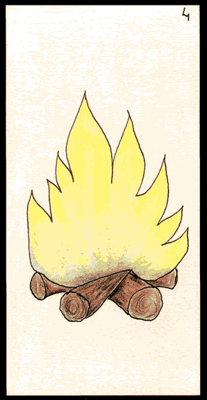
4 Le Feu
Le foyer et la famille, voilà une carte de l'oracle de gé qui vous montre votre habitat, votre maison, votre lieu de vie. Prenez soin de ceux qui vivent sous votre toit, les rapports familiaux sont mis en avant ainsi que la création de nouvelles attaches familiales. Sentimentalement vous avez besoin de cocooner, vous sentir aimé(e). Soyez à l'écoute de ce qui se passe sous votre toit et faites attention à la communication.
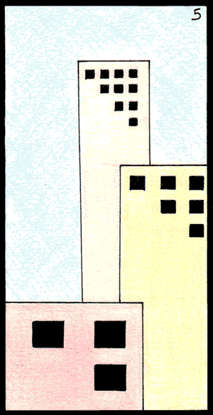
5 Les tours
Symbole de la ville, du béton et de la foule, vous allez vous déplacer vers ce type de lieu. Elle peut aussi vous mettre en garde contre le communautarisme et le replis sur soi, le fait de se construire une tour de protection. Ouvrez-vous aux autres, ne vous enfermez pas.
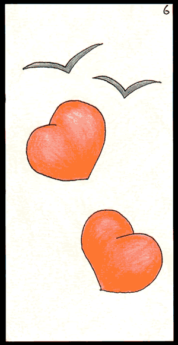
6 Les deux coeurs
La carte des rencontres, de l'union des coeurs et de la légèreté, vous allez rencontrer une personne qui fera vibrer votre coeur. Si vous êtes en couple, le feu va se ranimer et brûler comme au premier jour. Les semaines à venir vont être riche en sensualité.
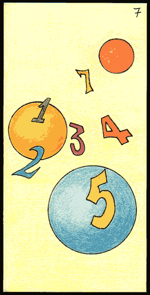
7 Les chiffres
Cette carte de l'oracle de gé représente les jeux de hasard, les gains inattendus, les imprévus, vous serez heureux et chanceux pour tout ce qui concerne le hasard. Si vous êtes joueur(euse), vous allez recevoir prochainement une récompense financière. Les chiffres sont de votre côté, vous pouvez aussi consulter un numérologue sur MSV !
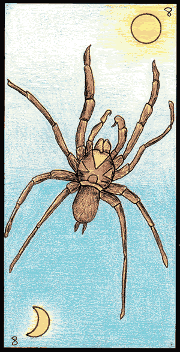
8 L'araignée
Soleil en haut : Symbole de la tristesse, des mauvaises nouvelles et de l'ennui, vous recevrez d'ici peu des messages qui vous bouleverserons et vous apporteront du chagrin. Le soleil reviendra après cette période d'obscurité.
Lune en haut : Symbole de joie et de bonnes nouvelles, c'est la fin des ennuis, vous recevrez d'ici peu des messages qui vous émerveillerons et vous apporteront du baume au coeur.
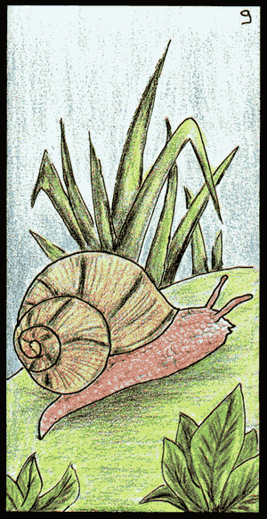
9 L'escargot
Cette carte divinatoire de l'oracle de gé représente les retards, la lenteur, les empêchements, vos projets ne se réaliseront pas dans les temps voulus, vous devrez faire preuve de patience, ne soyez pas pressé, ça n'arrangera pas les choses. Votre patience est mise à l'épreuve et vous devez la subir.
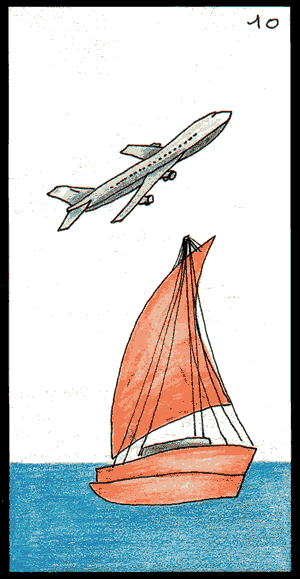
10 Le bateau
Cette carte de l'oracle de gé représente les voyages, les longues distance, les kms, l'éloignement géographique et le déménagement. Vous serez amené(e) à faire de grands déplacements, autant dans le travail que dans votre sphère privée. Vous risquez d'avoir la tête dans les nuages et un grand besoin de vous aérer l'esprit.
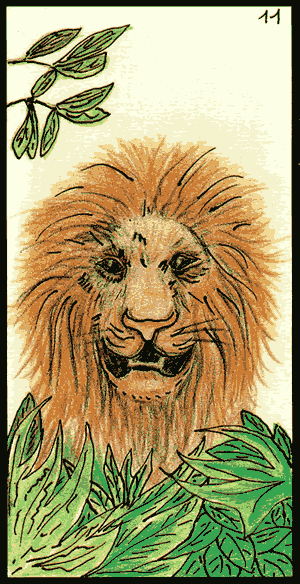
11 Le lion
Cette carte divinatoire représente la puissance, la domination, le modèle. Vous entrez dans une phase d'énergie intense où vous serez le maître d'oeuvre. Vous redoublez de volonté et de créativité. Vous serez vu comme un exemple aux yeux des autres. Attention toutefois à ne pas vous laissez déborder ou consumer par ce regain de puissance.
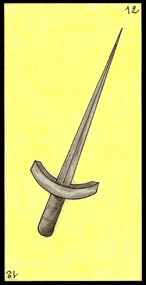
12 Le poignard
Pointe en haut : Vous êtes dans la recherche du conflit, agressif et irritable attention à prendre des pauses de temps en temps pour ne pas vous retrouver dans un état incontrôlable. Reprenez le contrôle ou bien vous risquez de vous faire des ennemis. Période de doute qui peut vous amener à faire de mauvais choix.
Pointe en bas : Vous êtes sur la défensive, dubitatif et irritable, attention à prendre des pauses de temps en temps pour ne pas vous retrouver dans un état paranoïaque. Reprenez le contrôle ou bien vous risquez de vous retrouver seul avec vous-même.
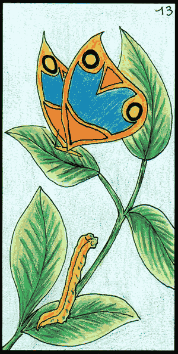
13 Le papillon
C'est la carte divinatoire de l'oracle de gé du changement, de la transformation, de la mutation. Vous allez prochainement devoir changer vos habitudes ce qui vous donnera l'opportunité d'avancer d'un pas nouveau. Symbolise le passage à l'âge adulte si l'on parle d'un enfant. Une nouvelle forme de maturité s'offre à vous.
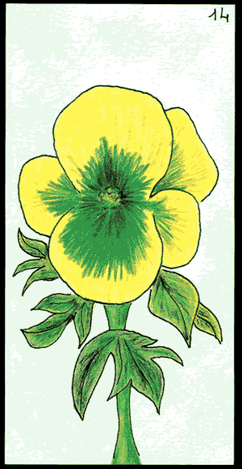
14 La pensée
Cette carte de l'oracle de gé réprésente le mentale et la spiritualité, vous êtes dans vos pensées et dans une introspection qui vous coupe un peu du monde extérieur, vous avez besoin de vous isoler et de rester face à vous même. Faites le tri dans votre esprit et chassez les mauvaises idées.
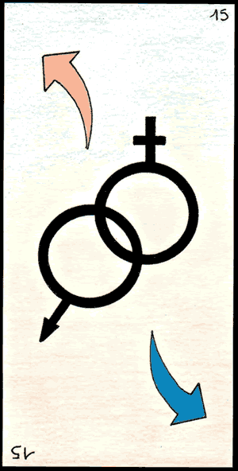
15 Les symboles sexuels
Cette carte de l'oracle de gé réprésente la sexualité, l'attachement et le contact physique. Vous plairez au sexe opposé et saurez user de vos charmes pour vous faire apprécier, vous êtes en pleine période de recherche tactile et sexuelle, prêt(e) à vivre des expériences intenses. Vous êtes en recherche de nouveautés et d'expérimentation.
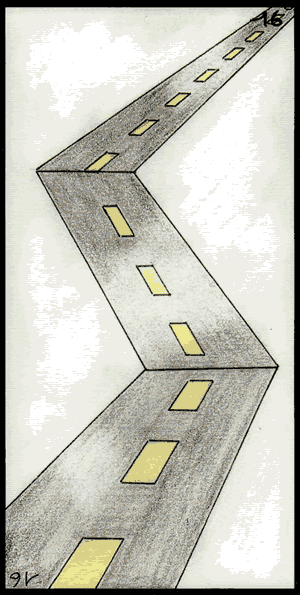
16 La route
Cette carte réprésente votre chemin, la voie, les projets.
À l'endroit : Des embûches apparaîtront sur votre chemin, symbolise les pannes de véhicule et les problèmes mécaniques mais ils ne seront que de courte durée. Si vous avez des travaux à réaliser sur un véhicule il est temps de les faire.
À l'envers : Des embûches apparaîtront sur votre chemin, symbolise les pannes de véhicule graves et les problèmes mécaniques nécessitant de grosses réparations.
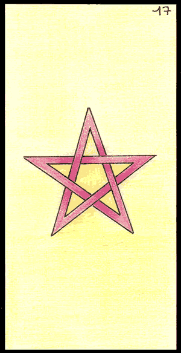
17 L'étoile
Cette carte de l'oracle de gé représente la protection et la bienveillance. Vous vous trouvez dans une période propice aux choix que vous n'avez pas osé faire précédemment. Levez-vous et lancez-vous, la chance vous sourit. Une bonne étoile brille au dessus de vous.
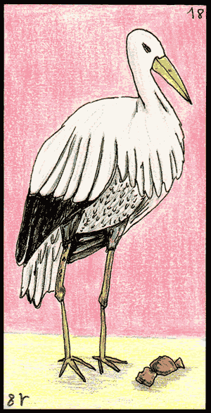
18 La cigogne
À l'endroit : Cette carte divinatoire représente une grossesse à venir, elle vous sera annoncée d'ici peu. Aucun problème n'est à craindre sur cette grossesse.
À l'envers : Une grossesse à risque peut survenir, attention à votre santé moral et physique.
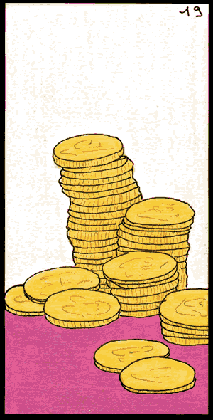
19 L'argent
Cette carte de l'oracle de gé annonce des gains très élevés, une rentrée d'argent importante. Vous allez recevoir une forte somme d'argent. Vous pouvez aussi être amené(é) à faire de grosse acquisitions comme de l'immobilier. C'est un moment idéal pour espérer une augmentation dans le cadre de votre travail.
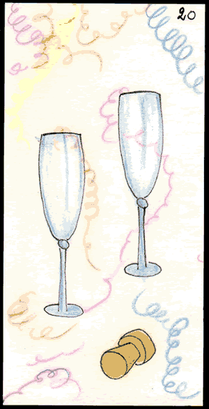
20 Les deux flûtes
Symboles de fête, de mariage, d'anniversaire, cette carte vous signifie que vous allez recevoir une ou des invitations à des événements festifs et entouré de monde, la joie est au rendez-vous. Vous pouvez aussi recevoir une invitation inattendues qui vous fera plaisir. Si vous préparez un événement de ce type, il sera réussi.
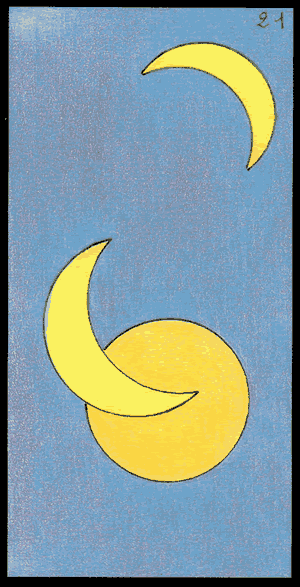
21 Les trois lunes
Cette carte vous annonce qu'un événement important va se produire dans le mois qui suit, c'est une carte de temps. Attendez-vous à être surpris(e) durant les trente jours à venir, vous pourriez être bouleversé(e). De très grands changements arrivent, soyez prêt(e).
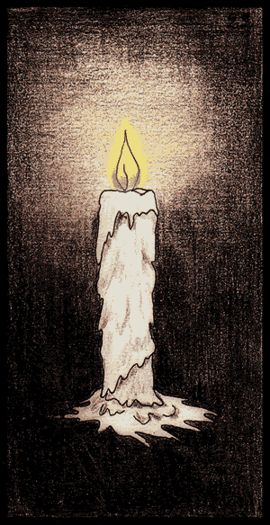
22 La bougie
Une carte assez particulière de l', elle symbolise la spiritualité, l'occulte ou la médiumnité. Ouvrez-vous à l'inconnu, l'invisible, soyez humble et commencez à croire en ce que vous ne comprenez pas. Les conseils d'un médium seront les bienvenus pour comprendre la situation.
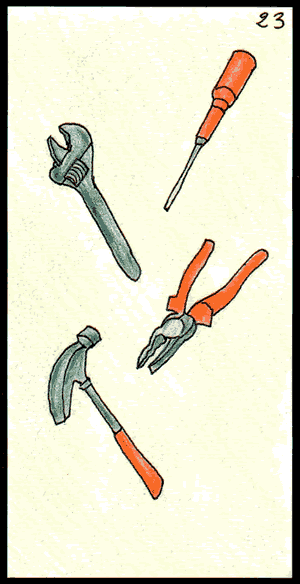
23 Les outils
Cette carte vous signifie que les moyens d'accomplir votre travail vous seront donné, si vous prévoyez des travaux dans votre maison par exemple, vous aurez les moyens financier et matériel de les réaliser. Si c'est un travail sur vous même, il sera efficace et bénéfique. Vos projets seront menés à bien.
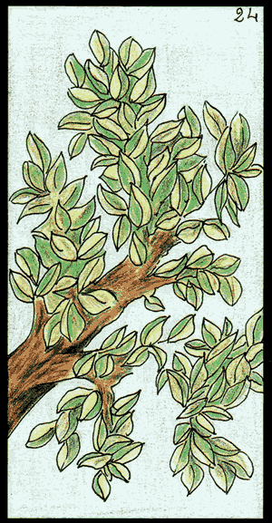
24 L'été
C'est une carte de temps qui symbolise la période estival et annonce une durée de trois mois. Une période agréable et chaude s'annonce devant vous, vous serez dans l'aisance et le confort. Votre moral est au beau fixe, la joie vous accompagne.
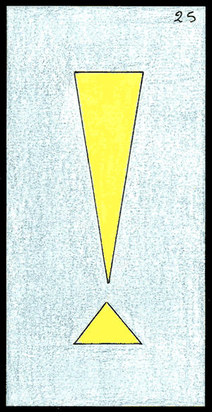
25 Le point d'exclamation
Il s'agit ici d'une carte de confirmation, vos rêves et vos attentent seront réalisées. Vos doutes vont se dissiper et laisser place à la lumière. Vous aurez plus de facilités à vous exprimer avec certitude et aplomb. Vous aurez les réponses à vos questions.
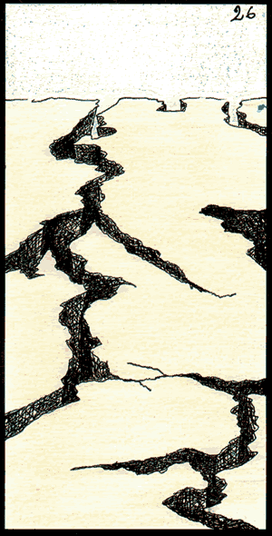
26 Le désert
On vous annonce ici une période de solitude et d'échecs, vos projets tomberont à l'eau ou seront très ralentis. Symbolise aussi la stérilité et l'inutilité, la sensation d'être seul et abandonné(e). Remettez vos projets à plus tard, ce n'est pas le moment de vous lancer.
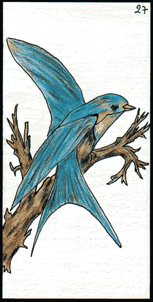
27 L'oiseau
Cette carte de l'oracle de gé symbolise le porteur de message, de courrier, vous allez recevoir des nouvelles, des réponses à vos questions. C'est un élément clé qui vous tombe du ciel pour apporter son lot de réponses. Tous vos doutes vont être dissipés.
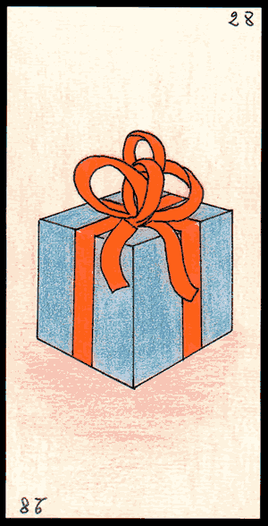
28 Le cadeau
À l'endroit : Vous allez recevoir un cadeau inattendu qui vous fera plaisir, cela peut aussi être simplement une bonne nouvelle. On pense à vous et on veut vous le faire savoir.
À l'envers : Vous devriez offrir un cadeau, simplement par plaisir ou bien pour faire plaisir. C'est avec de petites attentions que l'on redonne le sourire aux autres.
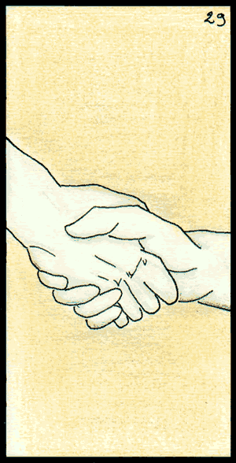
29 La poignée de mains
Réconciliation et ré-unification sont au rendez-vous. Vous allez conclure des projets, des contrats, des pactes, vous pourriez aussi être amené(e) à pardonner ou être pardonné(e). Vos rapports humains seront ressoudés après une période difficile.
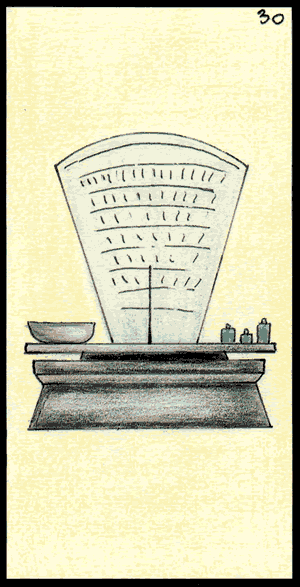
30 La balance
Cette carte de l'oracle de gé symbolise tout ce qui se rapporte au commerce, c'est une bonne période pour faire des affaires et pour l'investissement. Symbole aussi de justice et d'équité, vous serez amené(e) à peser le pour et le contre d'une situation. Pensez à vous faire aider si vous ne vous sentez pas à la hauteur de vos projet.
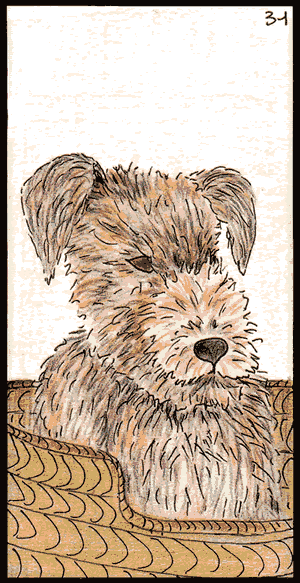
31 Le chien
Cette carte symbolise la fidélité et l'amitié, vous aurez besoin de vous sentir soutenu(e) et conforté(e) dans vos idées et vos actes. Attention à ne pas vous refermer sur vous même. Des personnes de confiance vont se présenter à vous pour vous aider.
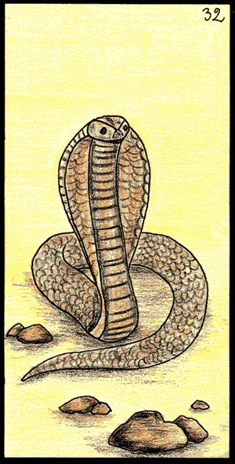
32 Le serpent
Cette carte de l'oracle de gé symbolise les perfidies, la jalousie et les mensonges, vous êtes entouré(e) par de mauvaises personnes prêtes à tout pour vous faire du mal ou vous discréditer aux yeux des autres, de votre famille de vos collègues. Soyez sur vos gardes.
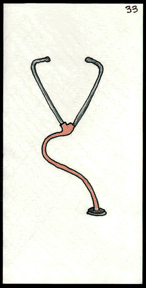
33 Le stéthoscope
Cette carte divinatoire représente la médecine, les soins, attention à votre santé, vous avez probablement trop donné(e) et votre capital énergétique commence à s'épuiser. Reposez-vous, prenez du recul. Un magnétiseur pourrait vous faire du bien et vous recentrer.
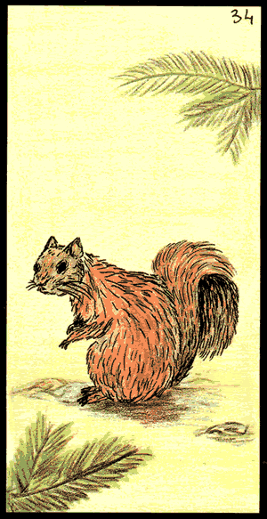
34 L'écureuil
Cette carte divinatoire de l'oracle de gé représente les économies, les petites sommes d'argent. Attention à vos dépenses, vous êtes probablement trop dépensier(e) en ce moment. Essayez de mettre de l'argent de côté et de reporter les dépenses prévues. Il est temps de vous mettre à l'abri des ennuis d'argent.
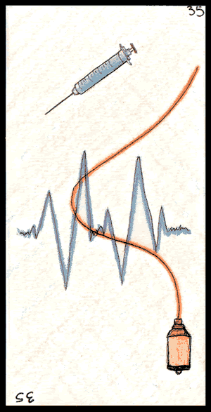
35 L'hôpital
Seringue en haut : Vous risquez d'avoir de petits soucis de santé sans gravité. Ne prenez pas de risques inconsidérés. Prenez soin de vous en vu d'un souci de santé à venir.
À l'envers : Vous risquez d'avoir de gros soucis de santé, voir même d'une opération ou hospitalisation. Ne prenez pas de risques inconsidérés.
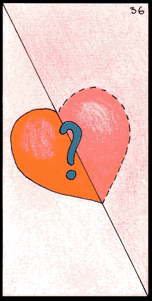
36 Le coeur partagé
Vos sentiments sont aux plus bas, vous ne vous sentez pas aimé(e), vous avez besoin de reconnaissance et d'amour. Sortez, faites place à de nouvelles relations. Votre coeur cherche sa moitié, écoutez le attentivement.
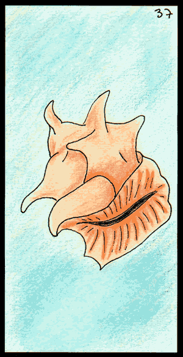
37 Le coquillage
Cette carte de l'oracle de gé est symbole de vacance, de plage et de repos, vous avez sûrement un besoin pressant de prendre du temps pour vous et de profiter de l'insouciance dont vous ne pouvez pas vous permettre au quotidien. Prenez un peu de temps pour vous aérer, même trente minutes vous feront du bien.
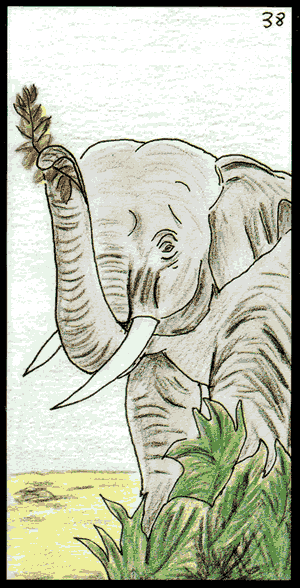
38 L'éléphant
Cette carte divinatoire réprésent le bonheur, la chance, avoir une bonne main aux jeux. Vous entrez dans une période de réussite et de validation de vos projets, si vous êtes amateur de jeux d'argent, vous pourriez remporter de grosses sommes. Lancez-vous, vous avez le vent en poupe!
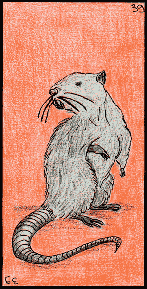
39 Le rat
À l'endroit : Souvent signe de maladies bénignes qui se soigneront facilement, attention à bien prendre soin de vous et des autres. N'essayez pas de gagner du temps en négligeant votre santé, vous le paieriez plus tard.
À l'envers : Faites très attention à votre santé et à celle des autres. Vous vous trouvez dans une période à risque propices aux accidents de toutes sortes.
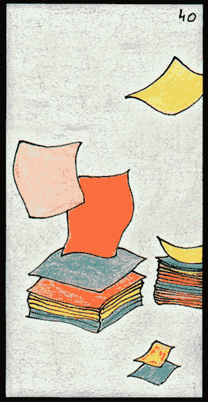
40 Les papiers
Cette carte représente les démarches administratives. Des études ou des formations sont à venir, vous entrez dans une période de montage de dossiers, d'échange de courrier et d'écriture. Si vous avez entamé des démarches auprès de l'administration, elles seront longues et usantes.
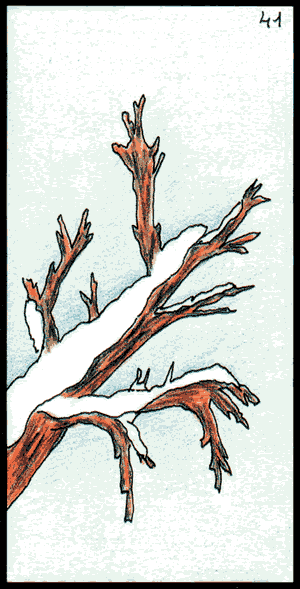
41 L'hiver
Cette carte divinatoire de l'oracle de gé symbolise une période hivernale, durée de 3 mois, période de ralentissent. Vous allez devoir faire preuve de patience, tout est au repos. Inutile de faire des pieds et des mains pour faire avancer les choses, vous n'êtes pas dans le bon rythme. Prenez votre mal en patience, après l'hiver, le printemps sera là.
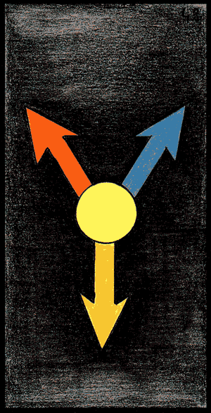
42 Les flèches
Cette carte symbolise le choix et les divers chemins, l'hésitation à prendre une décision, à choisir une voie. Vous doutez de l'avenir proche et vous perdez dans vos pensées. Faites le point sur la situation et prenez le temps de pesez le pour et le contre. N'hésitez pas à vous faire aider.
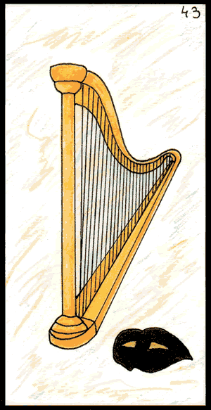
43 La harpe
Cette carte divinatoire symbolise tout ce qui touche aux arts, vous avez peut-être besoin de vous exprimer d'une manière différente, pourquoi pas par le théâtre et la musique. Attention à votre entourage, certaines personnes jouent un rôle et ne sont pas franches avec vous.
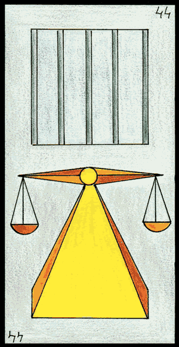
44 La justice
À l'endroit : Attention à bien rester dans le cadre de la loi, ne jouez pas trop avec la justice, elle pourrait vous rattraper. Soyez très attentif avec l'administration et les banques.
À l'envers : Attention à bien rester dans le cadre de la loi, vous risquez de subir un contrôle ou de devoir payer une forte amende, voir même de passer au tribunal. Soyez très attentif avec l'administration et les banques.
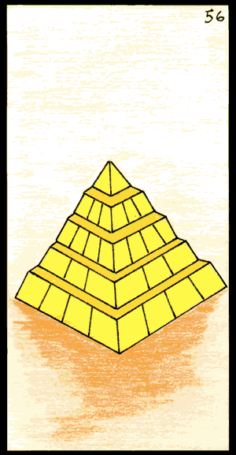
45 La jeune fille
Cette personne joue un rôle important dans votre vie en ce moment, prêtez bien attention à elle, c'est un personnage clé.
À l'endroit : Une personne brune.
À l'envers : Une personne blonde.
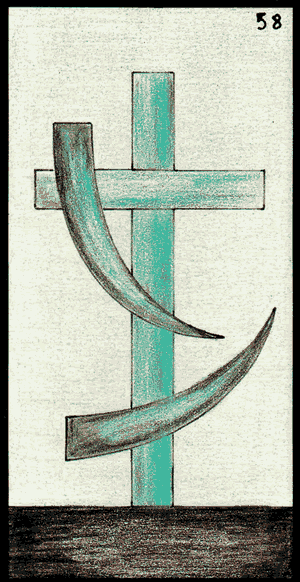
46 Le jeune homme
Cette personne joue un rôle important dans votre vie en ce moment, prêtez bien attention à elle, c'est un personnage clé.
À l'endroit : Une personne brune.
À l'envers : Une personne blonde.
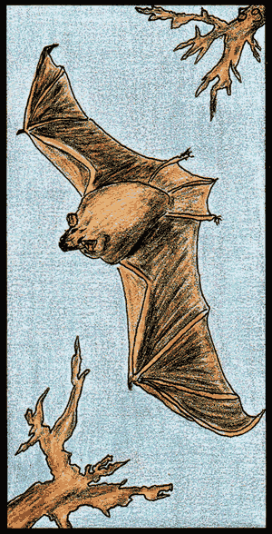
47 La femme
Cette personne joue un rôle important dans votre vie en ce moment, prêtez bien attention à elle, c'est un personnage clé.
À l'endroit : Une personne brune.
À l'envers : Une personne blonde.
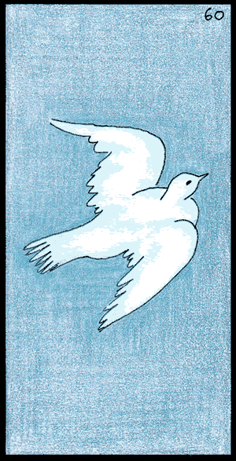
48 L'homme
Cette personne joue un rôle important dans votre vie en ce moment, prêtez bien attention à elle, c'est un personnage clé.
À l'endroit : Une personne brune.
À l'envers : Une personne blonde.
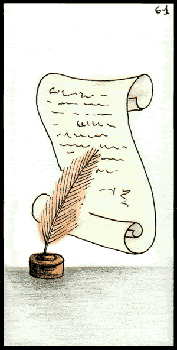
49 La consultante
Cette personne joue un rôle important dans votre vie en ce moment, prêtez bien attention à elle, c'est un personnage clé.
À l'endroit : Une personne brune.
À l'envers : Une personne blonde.
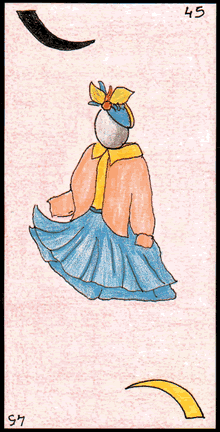
50 Le consultant
Cette personne joue un rôle important dans votre vie en ce moment, prêtez bien attention à elle, c'est un personnage clé.
À l'endroit : Une personne brune.
À l'envers : Une personne blonde.
51 La femme âgée
Cette personne joue un rôle important dans votre vie en ce moment, prêtez bien attention à elle, c'est un personnage clé.
À l'endroit : Une personne brune.
À l'envers : Une personne blonde.
52 L'homme âgé
Cette personne joue un rôle important dans votre vie en ce moment, prêtez bien attention à elle, c'est un personnage clé.
À l'endroit : Une personne brune.
À l'envers : Une personne blonde.
53 La flûte brisée
Cette carte de l'oracle de gé symbolise les fêtes ou les événements qui se passent mal. Vous allez assister à des disputes lors d'un repas ou d'une réunion. Soyez prêt(e) à vivre des situations tendues et conflictuelles. Attention à la séparation et au divorce.
54 La campagne
Ceci est une carte de lieu, elle représente les espaces verts, la retraite, le repos. Vous avez sûrement un besoin pressant de vous reposez et de lâcher prise. Libérez-vous du temps pour prendre soin de vous.
55 L'automne
Ceci est une carte de temps, elle symbolise une période de trois mois, la fin de projets et l'aboutissement. Vous arrivez à la fin d'un cycle de construction et de mise en place. Vous voyez enfin le bout du tunnel, c'est une période de joie et de récompenses.
56 La pyramide
Cette carte de l'oracle de gé symbolise l'élévation sociale et la consolidation des acquis. Si vous êtes en cdd, un cdi pourrait bientôt vous être proposé, si vous êtes à un poste important, vous pourriez être amené à prendre un poste clé dans votre hiérarchie. Vous montez d'un cran dans plusieurs domaines importants.
57 Le lynx
Cette carte représente les mensonges et la trahison, l'infidélité. Ici il est autant question d'amour que de professionnel, on vous cache des choses et on vous met à l'écart. Calomnies et jalousie sont aux goûts du jour... Faites attention à tous ceux qui gravitent autour de vous en ce moment, vous n'avez pas que des ami(e)s.
58 La croix
Cette carte symbolise la mort et l'enterrement, elle symbolise aussi la fin d'un cycle ou un deuil. Vous allez recevoir une mauvaise nouvelle, la tristesse est à venir. Cette carte symbolise la perte d'un être cher.
59 La chauve souris
Attention aux voleurs, à l'abus de confiance et à la trahison. On vous veux du mal autour de vous, soyez prudent(e) et attentif(ve), restez sur vos gardes et soyez lucide. Regardez les choses tel qu'elles sont et non pas tel que vous souhaiteriez les voir.
60 La colombe
Cette carte divinatoire de l'oracle de gé représente l'apaisement, la sérénité. Vous arrivez enfin dans une période de béatitude après tant de difficultés et de souffrances. Vous pouvez enfin souffler et profiter du calme qui s'offre à vous.
61 Le parchemin
Cette carte vous signifie que la période est idéale pour signer des contrats, conclure des affaires et de bons engagements. Des actes concrets vont vous être proposés et vous serez en bonne posture pour en profiter.